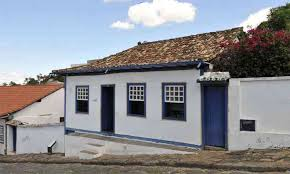
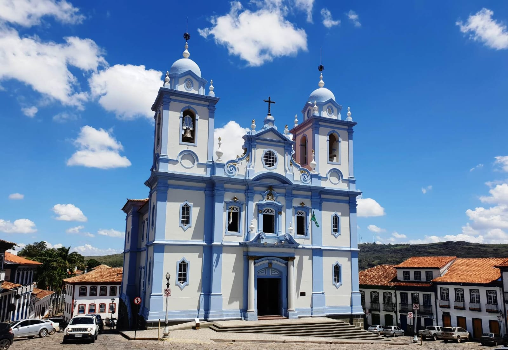

Patrimônio Cultural da Humanidade pela UNESCO, berço de Juscelino Kubitschek. Cidade histórica encravada na Serra do Espinhaço, com arquitetura colonial preservada e tradições seculares.

Museu instalado na casa onde nasceu o ex-presidente JK. O acervo preserva objetos pessoais, fotografias e documentos que contam a história do fundador de Brasília.
Igreja barroca do século XVIII, com rica ornamentação interna. Suas torres assimétricas são marca registrada da arquitetura colonial diamantinense.


Antiga vila operária preservada, transformada em ponto turístico. Oferece cachoeiras, piscinas naturais e ruínas históricas, sendo destino ideal para ecoturismo e fotografia.